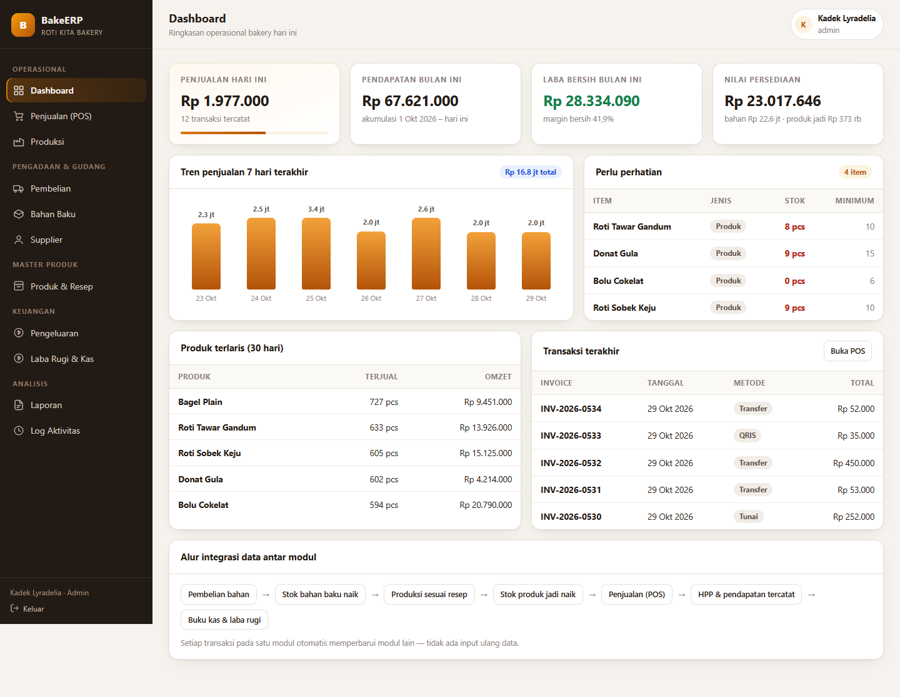
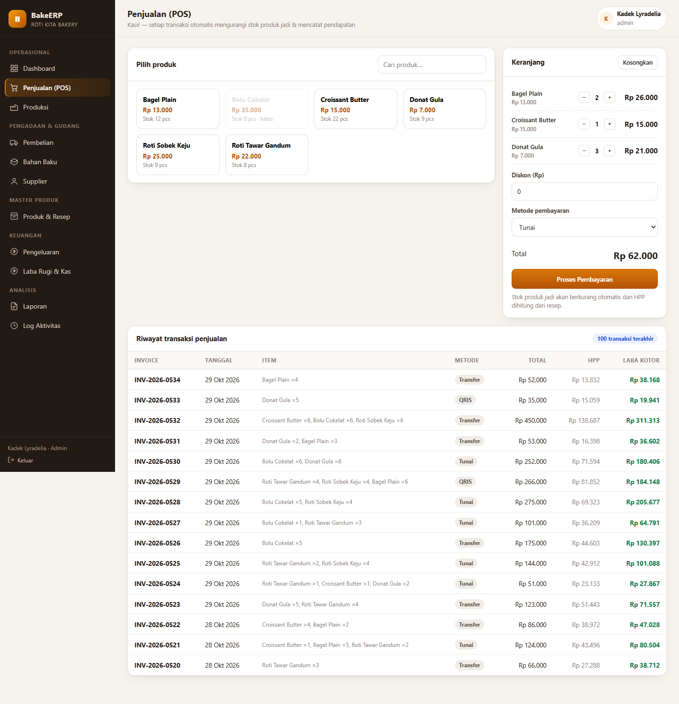
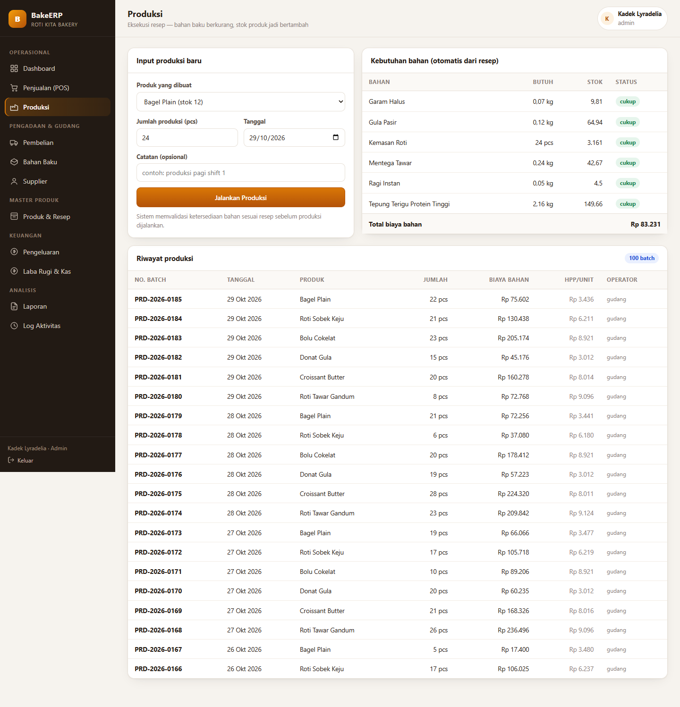
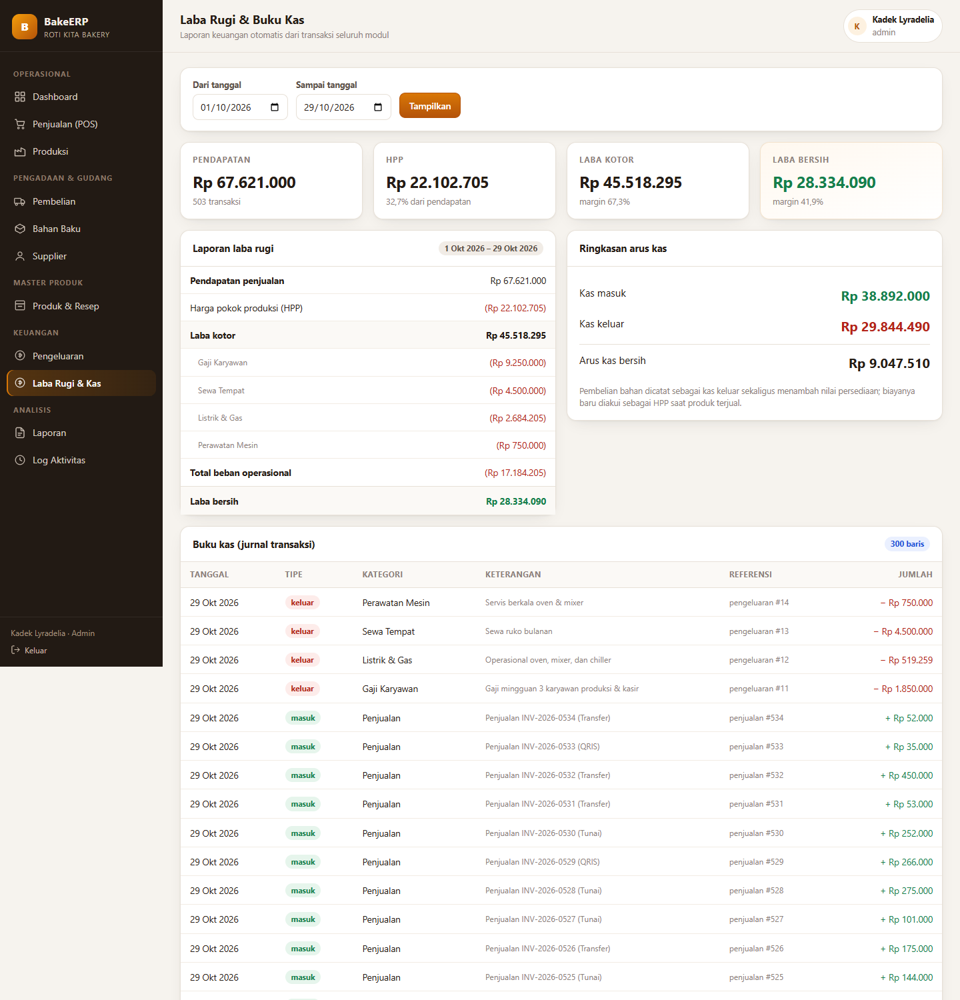

BakeERP menghubungkan pembelian bahan, persediaan, produksi berbasis resep (BOM), penjualan kasir, dan laporan keuangan dalam satu basis data. Satu transaksi cukup diinput sekali, lalu mengalir otomatis ke seluruh modul terkait.
BakeERP adalah aplikasi full-stack (server Python + basis data). GitHub Pages hanya dapat menyajikan berkas statis, sehingga aplikasi interaktifnya tidak bisa berjalan di sini. Untuk mencoba aplikasi yang sesungguhnya, jalankan di komputer Anda dengan langkah pada bagian Cara Menjalankan — seluruh kode dan data contoh sudah tersedia di repositori.
Bukan mockup — setiap halaman terhubung ke basis data dan benar-benar mengubah data.
KPI penjualan harian, laba bersih, nilai persediaan, peringatan stok kritis, dan tren 7 hari.
Keranjang, diskon, tiga metode bayar. Stok produk berkurang dan HPP dihitung dari resep.
Validasi ketersediaan bahan sebelum produksi, lalu bahan berkurang dan produk jadi bertambah.
Purchase order ke supplier. Penerimaan barang menambah stok dan memperbarui harga rata-rata.
Bahan baku, produk, supplier, dan bill of material penentu HPP per unit.
Buku kas, laba rugi otomatis, laporan penjualan, produksi, dan posisi persediaan.
Inilah yang membedakan ERP dari sekumpulan aplikasi terpisah: tidak ada input data berulang.
| Transaksi | Efek pada persediaan | Efek pada keuangan |
|---|---|---|
| Terima PO | Stok bahan bertambah; harga rata-rata diperbarui | Kas keluar sebesar nilai PO |
| Produksi | Bahan berkurang sesuai resep; produk jadi bertambah | Biaya bahan tercatat sebagai dasar HPP |
| Penjualan | Stok produk jadi berkurang | Kas masuk; pendapatan dan HPP tercatat |
| Pengeluaran | Tidak berubah | Kas keluar; menurunkan laba bersih |
| Ubah resep | Tidak langsung berubah | Mengubah HPP seluruh transaksi berikutnya |
Hanya butuh Python 3.10+. Tidak ada paket yang perlu dipasang untuk mode bawaan.
git clone https://github.com/lyradelia-commits/bakerp-erp.git cd bakerp-erp
python app.py # Windows: bisa juga klik dua kali # "Mulai BakeERP.bat"
http://localhost:8000
| Username | Password | Peran |
|---|---|---|
| admin | admin123 | Admin / pemilik |
| gudang | gudang123 | Gudang & produksi |
| kasir | kasir123 | Kasir |
Basis data bakery.db sudah berisi data contoh 31 hari
(534 penjualan, 185 batch produksi, 560 baris kas), jadi dashboard dan laporan
langsung terisi saat pertama dibuka.
python migrate_to_mysql.py BAKERP_BACKEND=mysql python app.py
Tangkapan layar dari aplikasi yang benar-benar dijalankan di browser.




Diuji lewat HTTP API terhadap aplikasi yang berjalan, bukan sekadar klik manual.
skenario uji integrasi lulus pada backend SQLite
skenario yang sama lulus pada backend MySQL 8
baris data dimigrasi SQLite → MySQL tanpa selisih
python tests/test_integrasi.py # SQLite BAKERP_TEST_BACKEND=mysql python tests/test_integrasi.py # MySQL